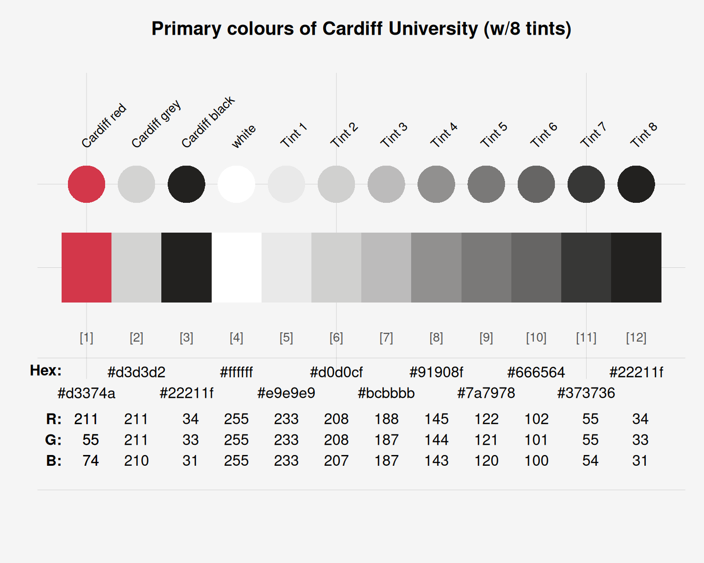

cardiff_1 provides the four primary colours (plus 8 tints)
of the Cardiff University, Wales, UK.
Source
Colour definitions are based on Cardiff University's User Experience Style Guide (PDF, v2 of 04/06/2013).
Details
The 4 primary colours are
"Cardiff red", defined as HEX "#d3374a" or R:211 G: 55 B: 74,
"Cardiff grey", defined as HEX "#d3d3d2" or R:211 G:211 B:210,
"Cardiff black}, defined as HEX \code{"#22211f" or R: 34 G: 33 B: 31, and
"white", defined as HEX "#ffffff" or R:255 G:255 B:255.
cardiff_1 uses the HEX color definitions.
Colour is used on the University site for way-finding as well as to improve contrast and visibility of content.
The primary Cardiff University colour palette should be used consistently throughout its application of the User Experience Style Guidelines.
The primary Cardiff University colour palette contains a spectrum of 8 tints from light to dark grey. These can be used mainly as graphical backgrounds, button overstates etc.
See also
cardiff_2 for examples of secondary colours of Cardiff University;
seecol for viewing and comparing color palettes;
usecol for using color palettes;
simcol for finding similar colors;
newpal for defining new color palettes;
grepal for finding named colors.
Other Welsh university color palettes:
aberystwyth_1,
aberystwyth_2,
bangor_1,
bangor_2,
bangor_3,
bangor_4,
cardiff_2
Examples
cardiff_1
#> Cardiff red Cardiff grey Cardiff black white Tint 1
#> "#d3374a" "#d3d3d2" "#22211f" "#ffffff" "#e9e9e9"
#> Tint 2 Tint 3 Tint 4 Tint 5 Tint 6
#> "#d0d0cf" "#bcbbbb" "#91908f" "#7a7978" "#666564"
#> Tint 7 Tint 8
#> "#373736" "#22211f"
unikn::seecol(cardiff_1, col_bg = "grey96",
main = "Primary colours of Cardiff University (w/8 tints)")
